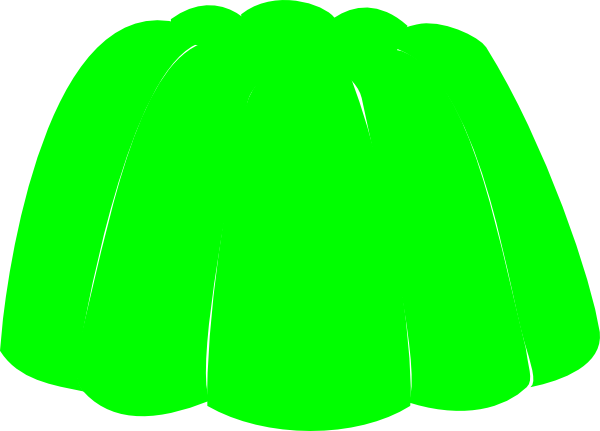
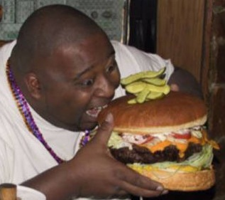
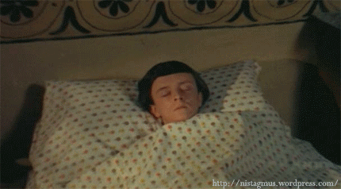
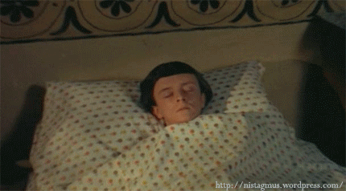

Thinking back, I estimate that I was in the third or fourth grade at my Catholic elementary school. After a hard morning's worth of learning multiplication, it was time for lunch. My classmates and I made two single file lines, one line for boys and one line for girls. We marched as a giggling unit down several flights of stairs to the cafeteria. Our lines merged to form one larger line which then merged with the even larger line of the other grades. I waited patiently in the line for my tray and my styrofoam plate. I peered over the counter and saw that today's lunch was a fantastic one. Chicken nuggets, toast, and green jello. I grabbed my food and my carton of two percent milk and made my way to the table. I scared down the toast and the chicken nuggets and made sure to save the best for last. The green jello.
, , , , , ,{kind=link}
I slowly opened the container and eyed the wiggling blob of green goodness. I eyed the jello that sat vulnerable in front me. There was nothing and no one that could protect this savory green blob from meeting my mouth. I picked up my white plastic spork and stabbed into the jello without remorse. I scooped a glob of jello and slowly inched it towards my mouth. The jello touched my tongue and I was instantly hit with flavor.
{kind=link}
I ate the jello very slowly. I savored every bite. Content, I placed the empty jello container on the plate and let out a sigh of relief. Suddenly, I started feeling strange. My whole body was tingling. I felt like I was growing. I was growing. Before I new it, I became the Black Hulk. The goodness of the jello was too much for my young body to handle so I temporarily mutated into the menacing Hulk. I let out a deafening roar.
{kind=link}
The younger children began screaming and the older children began running. The yell was so powerful that I blacked out. Before I new it, I was at home in bed. I opened my eyes to see my mother hovering over me to see why I was yelling in my sleep about jello. The clock read 6:30 AM. Sadly it was a dream. Until I realized they served green jello at lunch that day....
{kind=link}
To find out about the awe inspiring goodness of Green Jello, please purchase some for yourself.
, , 
, 